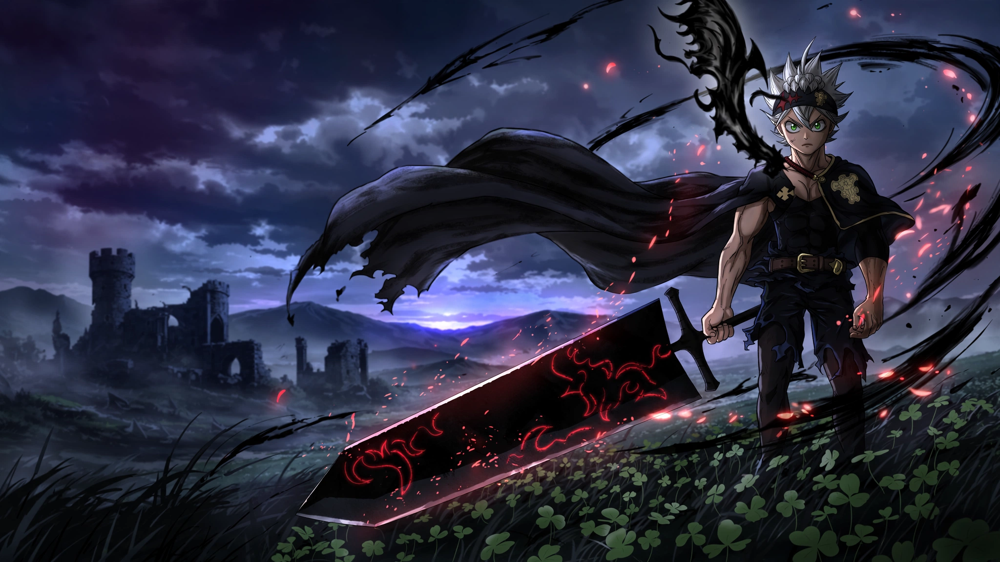
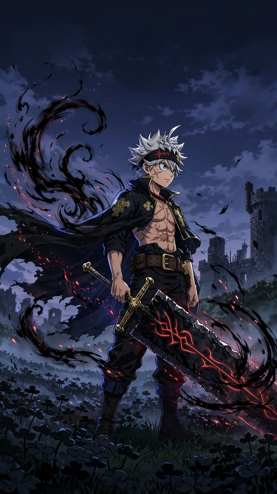

Staging preview · Asta candidate · Separate from the live site
Character of the Week Candidate · Black Clover
Asta
In a world where magic decides a person’s place, Asta was born with none. A member of the Black Bulls, he wields anti-magic and keeps pursuing his dream of becoming Wizard King.
Asta is a Black Bulls Magic Knight born without magic. He wields anti-magic through a Five-Leaf Clover Grimoire and a sword that cuts through or deflects magic; his stated goal is to become Wizard King. Official Asta character profile · Crunchyroll series page.

Original Asta fan art · Laptop wallpaper preview · Not official key art
Character file
The anti-magic Magic Knight
Asta grew up as a peasant and joined the Black Bulls. He has no magic in a world where nearly everyone can use it, but his Five-Leaf Clover Grimoire and anti-magic sword let him cut through and deflect magic.
His goal is to become Wizard King. Yuno shares that dream, and the two pursue it through a friendly rivalry and very different strengths.
MagicNone · Anti-magicMagic Knight squadBlack BullsGrimoireFive-Leaf CloverDreamBecome Wizard King
Asta’s appeal is the contrast between his starting point and his ambition: the one person without magic refuses to give up in a society built around it. The story pairs his physical training and resolve with a power that changes how magical opponents can be challenged.
Both designs draw on your references’ dramatic anime-key-visual feel: shadowed settings, a black-and-crimson anti-magic aura, restrained violet light and textured finish. The two compositions are made for their separate screens.

Phone wallpaper
1152 × 2048 · Portrait
Clock-safe space above Asta; bold black, red and ember tones.
Laptop wallpaper
2048 × 1152 · Landscape
Asta is set to the right, leaving open space on the left for desktop icons.
The art is original fan work, not official Black Clover key art. Wallpaper pricing and delivery options have not been set in this preview.
Asta picks · Amazon US
Black Clover collectibles
Three Asta figures available from Amazon US, selected for the character preview.
As an Amazon Associate I earn from qualifying purchases. Prices and availability can change; product details shown here were checked October 11, 2026. Product images are shown only where verified; other picks are text-only.
Fall 2026 spotlight
Black Clover returns
Black Clover is included in Crunchyroll’s Fall 2026 anime lineup, giving Asta a timely spotlight alongside the series’ returning season.